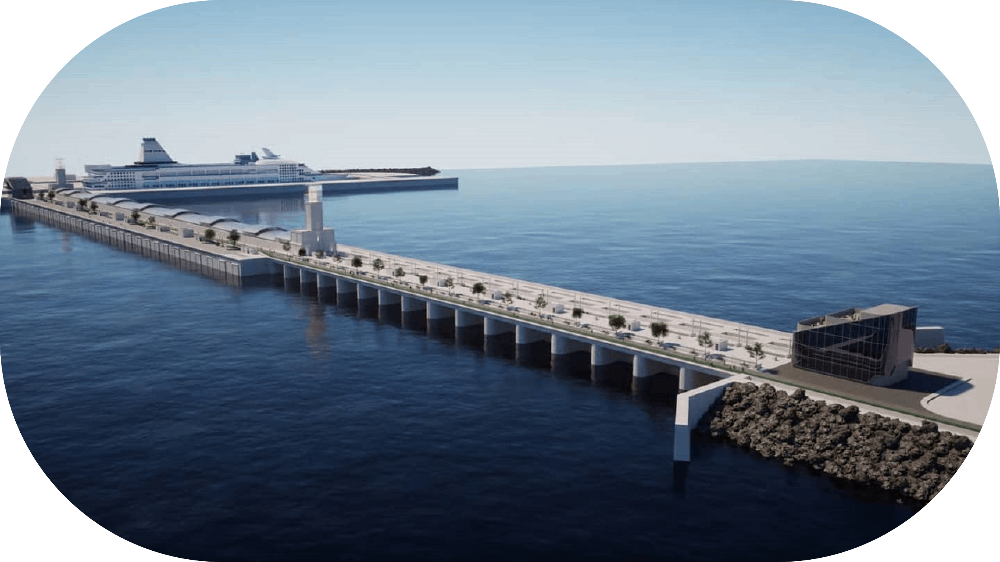
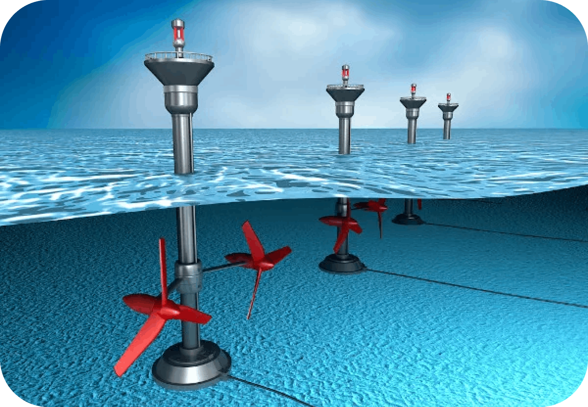

Energia maremotriz
A Energia maremotriz é uma fonte de energia renovável que aproveita o movimento das marés para gerar eletricidade.
Energia das marés, ou energia maremotriz, é a eletricidade gerada por meio do desnível da água do mar provocado pelo fenômeno das marés. Energia das marés é a eletricidade gerada pela conversão da energia cinética do movimento das águas do mar provocado pelas marés. Trata-se de uma energia limpa, que não produz resíduos poluentes ao meio ambiente e utiliza uma fonte renovável, que é a água.
As marés são um fenômeno oceânico caracterizado pela mudança no nível das águas sob a influência do campo gravitacional da lua e também do Sol. Quando ambos os astros se encontram alinhados com o planeta Terra, as marés são mais intensas. As marés são formadas pela atração gravitacional da Lua e do Sol sobre a água do mar, provocando alterações periódicas na altura da superfície do oceano.
Lua
A Lua é o astro mais próximo da Terra e, por isso, tem maior influência na formação das marés. A força gravitacional da Lua atrai a água do mar, formando uma protuberância que acompanha a trajetória da Lua. Quando a Lua desaparece, a maré desce.
Sol
O Sol também exerce uma atração gravitacional sobre a Terra, mas em menor escala do que a Lua.
COMO FUNCIONA?
A geração de energia por meio das correntes que são causadas pelas marés é comumente advinda do funcionamento de barragens e de turbinas, que se assemelham às turbinas eólicas, porém com as hélices posicionadas na porção inferior do mastro, isto é, abaixo da superfície do mar.
No sistema de turbinas, essas estruturas são fixadas na camada de areia que recobre o fundo do mar. A corrente provocada pela alteração no nível da água é a responsável por movimentar as hélices das turbinas O movimento da hélice aciona o gerador, onde se dá a conversão da energia cinética em energia elétrica.
| Vantagens | Desvantagens | |
|---|---|---|
| Sustentabilidade | É limpa e renovável, pois não libera gases poluentes e a fonte é inesgotável | O custo de instalação é muito elevado, devido ao preço das turbinas e hélices |
| Disponibilidade | A maré acontece o ano todo, dependendo apenas do ciclo lunar | O fornecimento é instável, pois depende do vento e de outros fatores |
| Localização | Pode ser uma alternativa para locais em que outras fontes são mais escassas | Só é possível instalar centrais de captação em locais que atendam 100% das exigências geomorfológicas |
| Impacto ambiental | Apresenta riscos mínimos ao meio ambiente | O licenciamento ambiental é muito rígido porque afeta a reprodução marinha próxima da costa |
Projeção para o futuro...
A energia maremotriz tem um futuro promissor, podendo desempenhar um papel cada vez mais importante na matriz elétrica mundial. Isso se deve a vários fatores, como a crescente demanda por fontes de energia limpa e a necessidade de reduzir as emissões de carbono.
No Brasil, a energia maremotriz tem um grande potencial de exploração, mas não há interesse em investir em pesquisas. Uma estimativa da USP é que o Brasil poderia gerar 87 gigawatts de energia por meio de usinas movidas por ondas.
A energia maremotriz já é mais aproveitada ao redor do mundo do que a de ondas, com tecnologias mais desenvolvidas e usinas em países como França, Canadá e Coreia do Sul.
Outras Energias


Energia do Hidrôgenio
A Energia do HIdrôgenio é uma energia renovável produzida a partir do Hidrôgenio

Energia da Biomassa
A Energia da Biomassa é uma energia renovável produzida a partir da matéria orgânica

Energia Geotérmica
A Energia Geotérmica é uma energia renovável produzida pelo calor da Terra